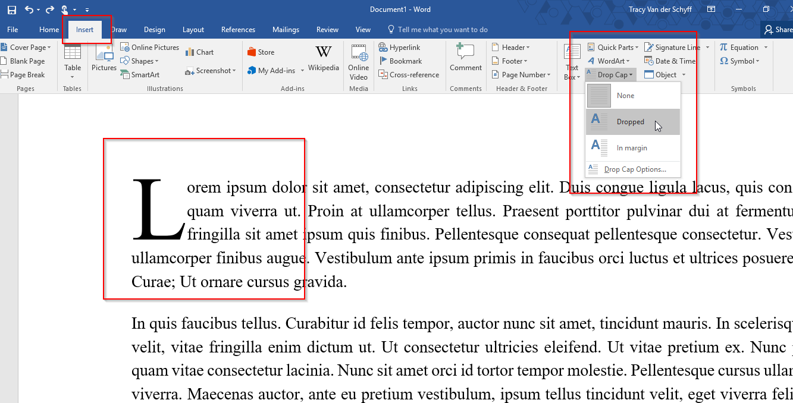

Microsoft Word adalah program aplikasi pengolah kata yang merupakan bagian dari Microsoft Office. Program ini dapat digunakan untuk membuat, menyunting, dan mengatur format dokumen, seperti surat, laporan, makalah, dan buku. Microsoft Word tersedia di berbagai sistem operasi, seperti Windows, macOS, iOS, dan Android. Program ini juga bisa berjalan di Linux dengan menggunakan Wine. Pada pertemuan WORD dalam praktikum PIK, materi yang telah dipelajari adalah Drop Cap dan Pembuatan Makalah
Drop cap adalah huruf pertama pada paragraph yang memiliki ukuran yang sangat besar dan lebih dari huruf lainnya. Fungsi Drop cap yaitu untuk membuat teks lebih menarik sehingga dapat memancing perhatian para pembaca
Sebelum menyusun makalah, sebaiknya kita terlebih dahulu memahami struktur-strukturnya.
Berikut adalah struktur makalah :
Salah satu fitur word yang berguna dalam pembuatan makalah adalah membuat daftar isi secara otomatis